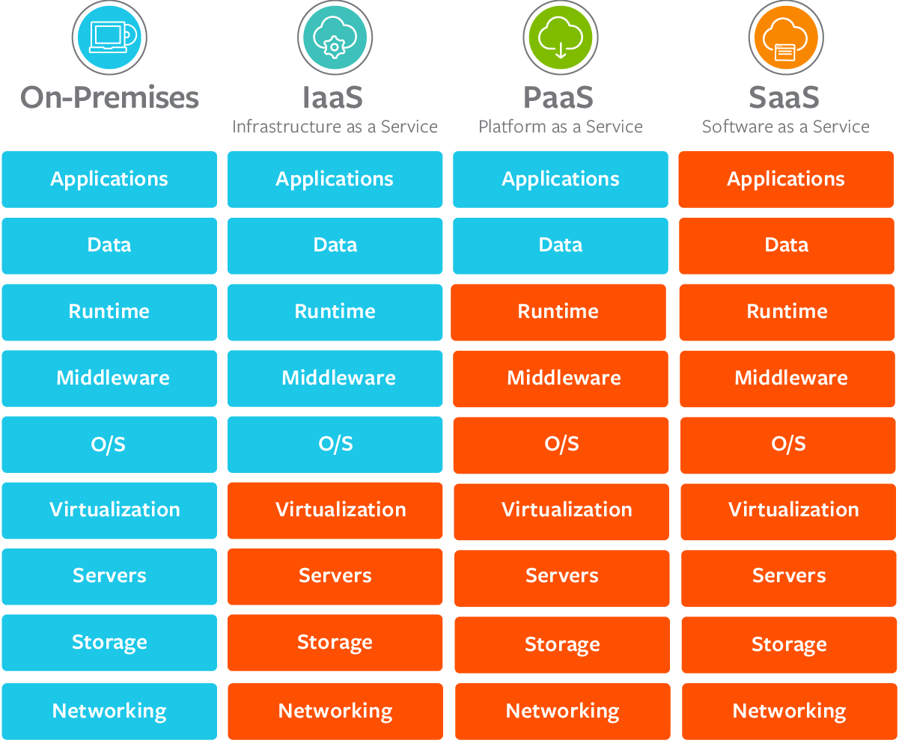
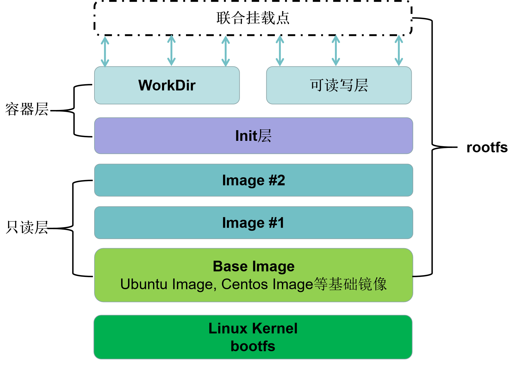
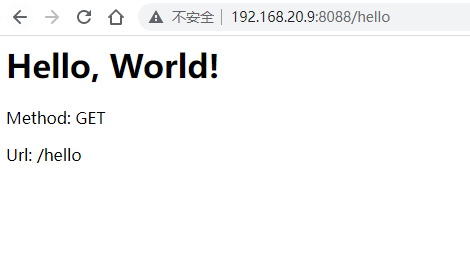

容器简单来说是一种沙盒技术，将应用“装”进沙盒中，像集装箱一样，把应用封装起来，使得应用之间不会相互干扰，而放进沙盒中的应用也方便“搬家”。本文基于docker来介绍容器相关核心技术。
容器技术发展简介
IaaS、PaaS 和 SaaS
一切皆服务（X as a service，XaaS）是目前的大趋势，2022年1月12日，国务院发布的《“十四五”数字经济发展规划》强调要推动企业上云，推进云网协同与算网融合。很多企业将自己的服务部署到云端。常见的云服务模型包括三种：
- 基础设施即服务 (Infrastructure as a Service, IaaS)
- 平台即服务 (Platform as a Service, PaaS)
- 软件即服务 (Software as a Service, SaaS)
这三种云服务模型提供了不同级别的控制和管理，
- IaaS 为云服务提供硬件，包括服务器、网络和存储。由于它只提供底层资源，客户需要自己管理操作系统 、数据库、应用程序等，所以灵活性更高。常见的有阿里云，亚马逊 AWS、微软 Azure等，据国际权威机构Gartner 2021年12月15日发布的最新报告，阿里云IaaS基础设施在计算、存储、网络、安全四项核心评比中均斩获最高分，拿下全球第一。
- PaaS 除了提供 IaaS 可提供的硬件之外，还提供操作系统、中间件、数据库等。比如服务器平台，开发、部署环境。开发人员可以在其基础上开发或自定义基于云的应用程序，只负责应用程序、功能和数据，不需要关注底层，可以大大减少编码时间。PaaS平台一般支持应用程序的完整生命周期：生成、测试、部署、管理和更新，可以有效管理应用程序的生命周期。比如Google App Engine，上传应用程序到上面后就可以为用户提供服务。
- SaaS 提供了最多的支持，为用户提供除其数据之外的所有服务。比如百度云、阿里云等存储服务，电子邮件，QQ、微信等社交服务都属于SaaS。
这三种云服务模型特征可总结为下图：

Cloud Foundry
很多用户通常是在本地开发环境开发好应用后将其部署到云上，而部署过程通常会碰到云端虚拟机和本地环境不一致的问题，前面介绍了PaaS 项目具有“应用托管”的能力，一些PaaS 项目可以有效解决这种环境问题，比如Cloud Foundry，开发人员只要执行一条命令（应用打包和分发）就能把本地的应用部署到云上。
Cloud Foundry需要启动不同用户上传的应用，如何做到相互不冲突呢？其实它调用了操作系统的 Cgroups 和 Namespace 机制为每一个应用单独创建一个称作“沙盒”的隔离环境，也就是“容器”。然后在容器中运行应用，实现多个应用互不干涉地在虚拟机中运行，后来出现的Docker 项目其实也是使用的这种思路。
Docker 镜像
Cloud Foundry虽然部署方便，但是部署之前的准备，也就是打包比较麻烦，需要做很多的修改和配置。Docker也使用了Cloud Foundry容器使用的Cgroups 和 Namespace 机制来创建隔离环境，区别在于打包方式不一样，Docker使用Docker 镜像技术实现应用打包，直接使用 docker build 命令创建镜像，这也是docker流行的原因。
Docker 镜像包括了完整的操作系统文件和目录，包含了应用运行所需要的所有依赖，不需要进行进行任何配置或者修改，跟你本地开发和测试环境用的操作系统完全一样，本地环境和云端环境的高度一致。镜像制作完成后，在云端执行 docker run 镜像名称 就可以运行应用。
Docker不能完全取代PaaS，因为它不能完成大规模应用部署。
容器编排
容器编排（Container Orchestration）是对容器的一系列定义、配置和创建动作的管理，实现对多个容器进行管理。Docker Compose可用来管理单个主机上的多个容器，Docker Swarm 是一款用来管理多主机上的Docker容器的工具，管理容器集群。
2014 年 6 月Google 公司推出了 Kubernetes 项目，构建出了一个与docker不同的容器编排与管理的生态，采用 Pod、Sidecar 等功能和设计模式，由于其先进的理念以及来自Google在容器化基础设施领域的多年实践经验，加上 Kubernetes 项目覆盖了足够多的场景，Docker Swarm 项目逐渐失势，Docker 公司选择逐步放弃开源社区而专注于自己的商业化转型。2017 年 10 月，Docker 公司在Docker 企业版中内置 Kubernetes 项目，标志着在容器编排中Kubernetes 取得全面胜利。
容器核心技术
下面以docker为例介绍容器是如何实现应用隔离以及资源限制的，了解Linux 容器的核心实现原理。
名称空间
名称空间（Namespace） 是容器用来实现隔离的技术，先来看个例子。
运行容器busybox，执行 ps 命令查看容器内进程：
1 | $ docker run -it busybox /bin/sh |
-it 一般一起使用，实现和docker容器进行交互。-i 表示以交互模式运行容器，-t 表示为容器分配一个伪输入终端。/bin/sh 是要在 Docker 容器里运行的程序。
容器内/bin/sh命令的进程ID为1，这表明容器里执行的/bin/sh 已经和宿主机”隔离”了，而在宿主机真实的进程空间里，这个进程的 PID 还是真实的数值，这就是Namespace 技术产生的效果，它只是修改了进程视图，容器内只能“看到”某些指定的进程。而对宿主机来说，这个/bin/sh 和其它进程没什么区别，我们可以在宿主机中查看这个/bin/sh进程的ID：
1 | $ docker ps | grep busybox |
可以发现，容器中“看到”的/bin/sh进程在宿主机中的PID为8786。
Namespace 技术可以确保不同容器之间的网络、进程等相互隔离，使互相无法通信，无法感知。比如我再启动另外一个容器执行/bin/sh命令：
1 | docker run -it rethinkdb /bin/sh |
可以发现它的PID还是1，也就是说既看不到宿主机里真正的进程空间，也看不到其他 Namespace 里的具体情况。
在宿主机查看它们的PID：
1 | $ ps ajx | grep /bin/sh | grep -v grep |
上面介绍了进程名称空间（PID Namespace），还有其他类型的名称空间：Mount、UTS、IPC、Network 、User等名称空间。Network Namespace用于实现网络隔离，而有时候容器之间是需要通信的，比如连接数据库。不同Namespace之间的通信是通过Veth 设备对和网桥来实现的，比如你查看安装了docker 的服务器的网络设备会发现叫做 docker0 的网桥和很多随机名称的 veth 设备。
接下来介绍容器是如何解决限制问题的。
Cgroups
使用Namespace技术之后，为什么还需要进行资源限制呢？
以前面介绍的/bin/sh进程为例，虽然进行了进程隔离，而在宿主机中，PID为8786的进程与其他所有进程之间依然是平等的竞争关系，也就是说，容器中进程使用的资源（CPU、内存等）可能随时被宿主机上的其他进程（或者其他容器的进程）占用。为了保证服务正常运行，需要进行资源限制。
容器使用 Cgroups 来限制一个进程能够使用的资源，Linux Cgroups （Linux Control Group）可以实现资源调度（资源限制、优先级控制等），限制进程可以使用的资源上限，比如CPU、memory、IO、网络带宽等。
cgroups 以文件的方式提供应用接口，Cgroups的默认挂载点在/sys/fs/cgroup 路径下:
1 | $ mount -t cgroup |
可以看到cgroups的各种子系统（Subsystem）：
- blkio：限制块设备的 IO 速度
- cpu：限制 CPU 时间片的分配
- cpuacct：统计CPU使用率，生成 cgroup 中的任务占用 CPU 资源的报告
- cpuset：给 cgroup 中的任务分配独立的 CPU(多处理器系统) 和内存节点。
- devices：限制cgroup创建(mknod)和访问设备的权限。
- freezer：暂停/恢复 cgroup 中的任务（进程 ）。
- hugetlb：限制使用的内存页数量。
- memory：对 cgroup 中的任务的可用内存进行限制，并自动生成资源占用报告。包括process memory, kernel memory, 和swap。
- net_cls：使用等级识别符（classid）标记网络数据包，这让 Linux 流量控制器（tc 指令）可以识别来自特定 cgroup 任务的数据包，并进行网络限制。
- net_prio：允许基于 cgroup 设置网络流量(netowork traffic)的优先级。
- perf_event：允许使用 perf 工具来对 cgroup进行性能监控
- pids：限制任务的数量（进程数）。
可以通过修改配置文件对子系统对应的资源进行限制，以CPU为例：
1 | $ ls /sys/fs/cgroup/cpu |
cpu.cfs_period_us 和 cpu.cfs_quota_us可用来限制在period期间内，用户组的CPU限额为quota的 CPU 时间，当超过这个值的时候，用户组将会被限制运行，等到下一个周期开始被解除限制。
举个例子来看如何配置cgroup来限制CPU，在/sys/fs/cgroup/cpu 目录下创建一个控制组test_cpu，目录下会自动生成对应的资源限制文件：
1 | $ cd /sys/fs/cgroup/cpu |
tasks文件用于存放需要使用此控制组进行资源限制的PID。
把 CPU quota值限制为总量的十分之一：
1 | $ echo 100000 > cpu.cfs_period_us |
创建一个 CPU 密集型的程序cputime.c：
1 | void main(){ |
编译执行：不限制
1 | $ gcc cputime.c -o cputime |
CPU限制后的执行结果：
1 | $ time cgexec -g cpu:test_cpu ./cputime |
可以看到CPU限制生效了，其它子系统资源限制类似。
对容器的资源限制一样，在对应的子系统下为每个容器创建一个控制组，启动容器进程后，将进程PID填写到tasks文件中就可以了。
1 | $ ls /sys/fs/cgroup/cpu |
目录ef0b47c6f9bbb91cf2c2aece8328de27d5e32d4c4baf2c4cea66111793962687 是我启动的busybox容器的cpu控制组。
1 | $ cd ef0b47c6f9bbb91cf2c2aece8328de27d5e32d4c4baf2c4cea66111793962687 |
可以看到，busybox容器中启动的/bin/sh进程（PID=8786）被加入了CPU控制组中。
1 | $ cat cpu.cfs_period_us |
发现cfs_quota没有被限制。
控制组中资源配置文件的值可以在启动容器时指定：
1 | docker run -it --cpu-period=100000 --cpu-quota=10000 busybox /bin/bash |
看一下是否生效：
1 | $ cat /sys/fs/cgroup/cpu/docker/a3b36d2f70ef42bddfaaa8cc4a88d472a7c1f3173731af7ccb8d710b44cbb89b/cpu.cfs_period_us |
注意：容器ID变化的原因是我重新运行了busybox容器。
其它子系统资源限制类似，比如memory子系统：
1 | $ cd /sys/fs/cgroup/memory/docker |
联合文件系统
Docker镜像技术是docker的重要创新，其核心就是联合文件系统，大大简化了应用的更新和部署。

bootfs和rootfs
一个典型的 Linux 系统至少需要包含bootfs（boot file system）和rootfs（root file system）两个文件系统：
- bootfs包含 boot loader 和 kernel，也就是说相同内核的不同的 Linux 发行版本的bootfs 相同，而rootfs 不同。
- rootfs（根文件系统）是一个操作系统的所有文件和目录，包含典型的目录结构，比如/dev, /proc, /bin, /etc, /lib, /usr等。
在docker容器技术中，宿主机上的所有容器共享主机系统的 bootfs，也就是共享宿主机的内核。换句话说，如果你配置了内核参数，该机器上的所有容器都会受到影响，这也是容器相比于虚拟机的主要缺陷之一。
每个容器有自己的 rootfs，也就是容器镜像，它是挂载在容器根目录上，用来为容器进程提供隔离后执行环境的文件系统。
下面进入Jenkins容器中看看有哪些目录：
1 | $ docker exec -it -u root jenkins bash |
可以看到容器的根目录挂载了一个完整操作系统的文件系统，因此在打包时将应用，以及应用运行所需要的所有依赖都封装在了一起，这保证了容器的“一致性”，部署非常便利。
结合使用 Mount Namespace 和 rootfs，容器就能够为进程构建出一个完善的文件系统隔离环境。在 rootfs 的基础上，Docker 提出了多个增量 rootfs 联合挂载一个完整 rootfs 的方案，这就是容器镜像中“层”的概念，下面介绍docker的镜像分层系统。
联合文件系统
通常情况下，我们会对已有的镜像进行修改，比如应用升级。Docker 在镜像的设计中，引入了层（layer）的概念。也就是说，用户制作镜像的每一步操作，都会生成一个层，也就是一个增量 rootfs，而修改时不会修改下层镜像（只读层），修改产生的内容会以增量的方式出现在可读写层中，这一层会存放你增、删、改rootfs 后产生的增量。也就是说可读写层只记录对只读层的更改，这样镜像会一层一层的重叠起来。
这种对容器镜像进行增量式的操作，大大减少了容器镜像占用的空间，比较轻量级，加上它的“一致性”特性，使得docker成为热点项目，Docker 公司在 2014~2016 年间迅猛发展。
docker 的这种镜像分层思想是通过联合文件系统来实现的，目前docker支持多种联合文件系统，包括AuFS，device mapper，overlayFS，overlayFS2等。
AuFS是最早支持的文件系统， 据说是因为AuFS的代码写的实在太烂，Linus Torvalds（Linux 之父）一直不让把 AuFS 添加到Linux 内核主干，所以我们只能在 Ubuntu 和 Debian 这些发行版上使用它。要使用它需要手动配置
device mapper是RedHat公司和Docker团队开发的文件系统，性能不是很好，但通过它可以在 centos 上安装并使用 docker。
overlayFS是AuFS的升级版，并且成功进入了 linux 内核主干，它使用硬链接的方式指向深层的镜像。
overlayFS2在架构上进行了优化，128 层以上才会使用硬链接，128层以下使用像 AuFS 的联合文件视图的方式。centos和Ubuntu 的Docker Engine默认使用overlayFS2。
1 | $ ls /var/lib/docker |
AuFS配置
docker使用的联合文件系统（Advance Union File System, AuFS）来源于Union File System (UnionFS)，是对 Linux 原生 UnionFS 的重写和改进，UnionFS的主要的功能是将多个不同位置的目录联合挂载（union mount）到同一个目录下。
如果你是Ubuntu或者 Debian 系统，可以手动配置AUFS 模式，步骤如下：Ubuntu-20.04.3，Docker version 20.10.12。
查看系统是否支持 AuFS：
1 | $ grep aufs /proc/filesystems |
查看当前docker使用的文件系统：
1 | $ docker info | grep "Storage Driver" |
在 /etc/docker 下新建 daemon.json 文件，写入以下内容：
1 | { |
重启 Docker：
1 | $ sudo systemctl restart docker |
重启后Docker的文件系统就切换为AuFS了。
docker镜像结构
下面以centos和Ubuntu 默认使用的overlayFS2为例介绍docker的镜像分层系统。
以jenkins举例，查看jenkins镜像包含的层：
1 | $ docker image inspect jenkins/jenkins |
查看 RootFS 字段可以看到jenkins镜像包含了20层，Docker 把这些rootfs联合挂载在一个统一的挂载点上
- LowerDir 为只读镜像层。可以有多层，可以看到上面的 jenkins 镜像的
LowerDir一共有19层。 - WorkDir 为工作基础目录，和
Upper层并列， 充当一个中间层的作用，在对Upper层里面的副本进行修改时，会先到WorkDir，然后再从WorkDir移动Upper层。 - UpperDir 为可读写层，对容器的更改发生在这一层，包含了对容器的更改，挂载方式为rw，即 read write，采用写时复制（copy-on-write）机制。
- MergedDir 为
WorkDir、UpperDir和LowerDir的联合挂载点，是呈现给用户的统一视图
下图显示了OverlayFS架构是如何进行挂载的。

容器镜像层的rootfs ID可以在 GraphDriver 的LowerDir 中查看，也可以通过如下方式一步一步找到每层的cache-id。
1 | $ ls /var/lib/docker/image/overlay2/distribution/ |
Diffid-by-digest 保存了digest（layerID）-> diffID 的映射关系，v2metadata-by-diffid 保存了diffID -> digest（layerID） 的映射关系。
通过diffID获取layerID，以最底层7948c3e579...... 为例：
1 | $ cd /var/lib/docker/image/overlay2/distribution/v2metadata-by-diffid/sha256 |
得到 layerID 为 3192219afd04f93......
docker的image元数据和layer元数据分别存放在imagedb和layerdb目录下：1
2
3
4
5
6
7
8
9
10
11
12
13
14
15
16
17
18$ cd /var/lib/docker/image
$ ls
overlay2
$ tree -L 2 overlay2/
overlay2/
├── distribution
│ ├── diffid-by-digest
│ └── v2metadata-by-diffid
├── imagedb
│ ├── content
│ └── metadata
├── layerdb
│ ├── mounts
│ ├── sha256
│ └── tmp
└── repositories.json
10 directories, 1 file
docker image命令查看jenkins镜像ID：1
2$ docker image ls | grep jenkins
jenkins/jenkins latest 10fafa8484ea 12 months ago 721MB
通过镜像ID对应image元数据：1
2$ cd /var/lib/docker/image/overlay2/imagedb/content/sha256
$ cat 10fafa8484ea146b66ede5c232021f229e0f5d0282f334bb40114b79d5c493ec
我这里不展示具体内容了，和 docker image inspect jenkins/jenkins 命令显示的内容一样。
1 | $ cd /var/lib/docker/image/overlay2/layerdb/sha256 |
可以看到最底层的layer：7948c3e5790c6......，你会发现没有layerID为4d1ab3827f6b69f4......的第二层，因为docker使用了chainID的方式来保存其它层：chainID=sha256sum(H(chainID) diffid)，也就是说7948c3e5790c6...... 的上一层的sha256 id是：
1 | $ echo -n "sha256:7948c3e5790c6df89fe48041fabd8f1c576d4bb7c869183e03b9e3873a5f33d9 sha256:4d1ab3827f6b69f4e55bd69cc8abe1dde7d7a7f61bd6e32c665f12e0a8efd1c9" | sha256sum - |
你可以在/var/lib/docker/image/overlay2/layerdb/sha256 目录下找到第二层：72df91e735ae2b7...... 。
依次类推，可以计算出所有层的layerID的组合。
/var/lib/docker/image/overlay2/layerdb 存的只是元数据，每层真实的rootfs在/var/lib/docker/overlay2/ 目录下，我们需要找到它的cache-id。
查看/var/lib/docker/image/overlay2/layerdb/sha256/7948c3e5790c6df89fe48041fabd8f1c576d4bb7c869183e03b9e3873a5f33d9/cache-id的值:
1 | $ cat cache-id |
/var/lib/docker/overlay2/4d335a15bbfe5484698feba460f84b8635191cb4c30f5048ae4d23c2b7fa64fe 就是当前层的rootfs。
进入里面可以看到一个完整的系统目录：
1 | $ cd /var/lib/docker/overlay2/4d335a15bbfe5484698feba460f84b8635191cb4c30f5048ae4d23c2b7fa64fe |
你在 /var/lib/docker/overlay2/ 目录下可能会看到以“-init”结尾的目录，它对应docker的Init 层，位于只读层和读写层之间，专门用来存放 /etc/hosts、/etc/resolv.conf 等信息。在启动容器时写入的一些指定参数（每台机器环境不一样，比如hostname等）通过这一层进行修改，这些修改往往只对当前容器生效，在 docker commit 提交为镜像时不会将init层提交。
小结
Linux容器包括3个核心技术：名称空间、Cgroups和联合文件系统。
名称空间（Namespace）具有隔离能力，Cgroups 提供限制能力，可以说，容器其实就是一种特殊的进程。
基于 rootfs 的联合文件系统是容器的基础，需要注意的是，容器镜像，也就是rootfs是一个文件系统，它不包含内核。
Docker数据卷
默认情况下，在容器内创建的所有文件都存储在可读写容器层，可能会出现以下问题：
- 当容器被删除时，数据不会持久存在，也会跟着被删除。
- 如果其它容器进程需要此容器的数据，从容器中取数据可能会很困难。
- 容器的可读写层与容器运行的宿主机紧密耦合，不方便将数据迁移到其他地方。
- 相比直接写入主机文件系统，在可读写容器层进行文件管理可能会降低性能。
Linux系统中，Docker主要提供了3种方式用于容器的文件存储：volumes、 bind mounts 和 tmpfs

- Volume（数据卷）存储在主机文件系统，由Docker管理，Linux下目录为
/var/lib/docker/volumes/。非docker进程不会修改这个目录。Volume是进行Docker数据持久化的最好方法。 - Bind mounts可以存储在主机系统的任何位置，甚至可能是重要的系统文件或目录。Docker宿主机上的非Docker进程或Docker容器可以随时修改它们。
tmpfs挂载只存储在宿主机的内存中，不会写入宿主机的文件系统。
我们一般使用Volume机制来进行目录挂载，docker中使用 -v 参数，比如启动jenkins容器时，挂载 /var/jenkins_home 目录：
1 | $ docker run --name=jenkins -d -p 8080:8080 -p 50000:50000 -v jenkins_test:/var/jenkins_home jenkins/jenkins |
其中，jenkins_test是使用docker volume create jenkins_test 命令创建的数据卷。具体可参考Docker搭建持续集成平台Jenkins。
目录挂载的语法格式如下：
1 | $ docker run -v /var/test:/home ... |
实现将宿主机目录/var/test 挂载到容器的 /home 目录，在该挂载点 /home 上进行的任何操作，只是发生在被挂载的目录/var/test 上，而原挂载点的内容则会被隐藏起来且不受影响，不会影响容器镜像的内容。
此外，使用 docker commit 命令提交时，不会将宿主机目录提交，这是由于 Mount Namespace 的隔离作用，宿主机并不知道这个绑定挂载的存在。所以，在宿主机看来，容器中可读写层的 /home 目录始终是空的。但是，新产生的镜像里会多出来一个空的 /home 目录。
容器和虚拟机区别
通过前面对容器核心技术的介绍，你可能已经知道了容器和虚拟机之间的一些区别。最直接的就是容器不会虚拟化内核，容器是共用宿主机的内核的。
先来看下面这张图：

虚拟机（Virtual machine, VM)是对计算机系统的仿真，硬件是虚拟化的，每个虚拟机都有自己的底层操作系统。管理程序(hypervisor)位于硬件和虚拟机之间，通过硬件虚拟化功能模拟硬件资源，比如 CPU、内存、I/O 设备等。然后，在模拟的虚拟硬件上安装了一个新的操作系统，即 Guest OS。
Docker容器也可以说是一种虚拟化技术，它不像虚拟机那样虚拟化操作系统和硬件资源，使用Docker Engine来创建相对隔离的沙盒环境。
总结一下它们的主要区别：
- 容器与容器之间使用名称空间进行隔离隔离，而虚拟机是完全的资源隔离，可能更安全。
- 容器共享宿主机的内核，而虚拟机使用完全独立的内核，需虚拟化硬件和内核。
- 虚拟机的启动可能需要几分钟，Docker启动只需几秒钟甚至更短。
- 容器镜像更加轻量级，可能只有几百M，而虚拟机镜像可能有几十G。
Docker镜像制作
了解了Linux容器3大核心技术之后，来看一下制作docker镜像的步骤。
应用编写
使用Docker部署一个用Python 编写的 Flask Web 应用 (app.py) 。
1 | from flask import Flask, escape, request |
创建requirements.txt文件，内容为：
1 | flask |
编写Dockerfile文件
Docker 使用 Dockerfile文件来构建镜像，使用一些标准原语来描述要构建的镜像，Dockerfile语法可参考容器技术介绍：Docker Dockerfile语法与指令。
可以到dockerhub选择合适的python镜像：https://hub.docker.com/_/python
Dockerfile文件内容：
1 | # 基于Python开发镜像构建 |
FROM指令指定了构建的基础镜像。
CMD ["python", "app.py"]等价于docker run <image> python app.py。默认情况下，Docker 会提供一个隐含的 ENTRYPOINT：/bin/sh -c。实际上运行在容器里的完整进程是：/bin/sh -c "python app.py"，即CMD 的内容就是 ENTRYPOINT 的参数。
镜像制作
准备好上述三个文件后，就可以开始制作镜像了。
1 | $ ls |
当前目录执行：
1 | $ docker build -t flaskdemo . |
-t 表示给这个镜像加一个 Tag。执行上述命令后，会按照Dockerfile 文件中的原语顺序执行，每个原语都会都会生成一个对应的镜像层。
生成完成后，使用 docker images 命令查看结果：
1 | $ docker image ls | grep flaskdemo |
启动容器
docker run 命令启动容器：
1 | $ docker run -p 8088:1234 flaskdemo |
由于我的docker安装在虚拟机中，在windows物理机访问虚拟机IP地址：http://192.168.20.9:8088/
访问http://192.168.20.9:8088/hello

进入容器，查看一下目录文件：
1 | $ docker ps | grep flaskdemo |
docker exec 命令可以进入正在运行中的容器，查看正在运行的 flaskdemo 容器的进程号（PID）：
1 | $ docker inspect --format '{{ .State.Pid }}' 3b75f31e42cd |
查看宿主机的 proc 文件，可以看到PID=3302 的进程的所有 Namespace 对应的文件：
1 | ls -l /proc/3302/ns |
docker exec 的实现原理是通过加入到某个进程已有的 Namespace 当中，从而达到“进入”这个进程所在容器的目的。
Docker 的--net 参数可以让你启动一个容器并“加入”到另一个容器的 Network Namespace 里，比如在搭建Prometheus + Grafana的性能监控系统中，使用如下命令启动Prometheus：
1 | $ docker run -d --name prometheus --network grafana -p 9090:9090 -v /root/prometheus/prometheus.yml:/etc/prometheus/prometheus.yml prom/prometheus:latest --config.file=/etc/prometheus/prometheus.yml |
将容器prometheus网络加入到了grafana的网络名称空间里。
Docker commit
Docker commit一般用于从一个运行状态的容器提交为一个新的镜像，一般不建议这样做，原因是这样不方便排查问题，可维护性差，Dockerfile的方式更容易排查问题。
Docker commit构建命令：
1 | $ docker commit 容器名 新镜像名:tag |
总结
看到这里，你可能对Docker容器有了一个初步的认识。Docker涉及到大量Linux相关技术，本文只是简要介绍了容器相关核心技术。
容器实际上是一个由名称空间、Cgroups 和 联合文件系统三种技术构建出来的，与宿主机隔离的特殊进程（可通过docker inspect --format '{{ .State.Pid }}' 容器ID 命令获取容器进程ID）。
一个正在运行的 Linux 容器可以看成两部分：
- 一个容器镜像，是容器的静态视图；
- 一个由 Namespace+Cgroups技术构成的隔离环境，称为“容器运行时”（Container Runtime），是容器的动态视图。
我们不用关心容器运行时，在开发中，只关注容器镜像就可以了，由于它部署方便，得到广大开发者的青睐。而对于复杂的应用或者服务，通常具有大规模的容器集群，容器技术从“容器”快速发展到“容器云”，在云计算领域占有重要地位。因此，容器编排技术非常重要，最具代表性的容器编排工具有 Docker 公司的 Compose+Swarm 组合，以及 Google 与 RedHat 公司共同主导的 Kubernetes 项目。
推荐参考：
https://programmer.help/blogs/docker-disk-space-management.html
- https://www.bmc.com/blogs/saas-vs-paas-vs-iaas-whats-the-difference-and-how-to-choose/
- https://testerhome.com/topics/9522
- https://testerhome.com/topics/18471
成事不说，遂事不谏，既往不咎。——《论语·八佾》
本文标题:容器技术介绍之docker核心技术概述
文章作者:hiyo
文章链接:https://hiyongz.github.io/posts/container-docker-architecture-introduction/
许可协议:本博客文章除特别声明外，均采用CC BY-NC-ND 4.0 许可协议。转载请保留原文链接及作者。